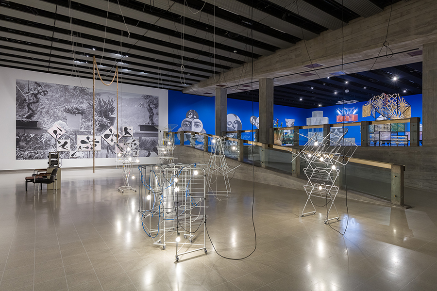

Haegue Yang Lecture
Join us for a free public lecture by artist Haegue Yang followed by an audience Q&A.
Since the mid-1990s, Haegue Yang (b. 1971 in Seoul, South Korea) has lived and worked in Seoul and Berlin and currently teaches at her alma mater, the Städelschule in Frankfurt am Main, Germany. Spanning a vast range of media—from collage to kinetic sculpture and room-scaled installations—Yang’s work links disparate histories and traditions in a visual idiom all her own. The artist draws on a variety of craft techniques and materials and the cultural connotations they carry: from drying racks to Venetian blinds, hanji paper to artificial straw. She is known for her multisensory environments that activate perception beyond the visual, creating immersive experiences that treat issues such as labor, migration, and displacement from the oblique vantage of the aesthetic. Ensuring that her references remain wayward and personalized, Yang prizes fluidity over unified narratives. “Maintaining an aporia between form and content, material and subject, abstraction and history, is an act of translating the struggle of one’s life,” she has said.
A recipient of the Wolfgang Hahn Prize in 2018 and the 13th Benesse Prize at the Singapore Biennale in 2022, Yang has been the subject of major solo exhibitions at museums around the world, including Hayward Gallery, London (2024); Helsinki Art Museum (2024); Pinacoteca de São Paulo (2023), SMK – Statens Museum for Kunst, National Gallery of Denmark, Copenhagen (2022); the Art Gallery of Ontario, Toronto (2020); Tate St Ives, United Kingdom (2020); National Museum of Modern and Contemporary Art, Korea (2020); Museum of Modern Art, New York (2019); Museum Ludwig, Cologne (2018); Centre Pompidou, Paris (2016); Leeum Museum of Art, Seoul (2015); Haus der Kunst, Munich (2012); and the Korean Pavilion of the 53rd Venice Biennale (2009).
This event will be live captioned by Communication Access Realtime Translation (CART) services. The auditorium is wheelchair accessible and hearing assisted devices are available. For additional access requests, visit saic.edu/access.
Image: Haegue Yang, installation view of Leap Year, 2024. Photo: Mark Blower. Courtesy the artist and the Hayward Gallery.